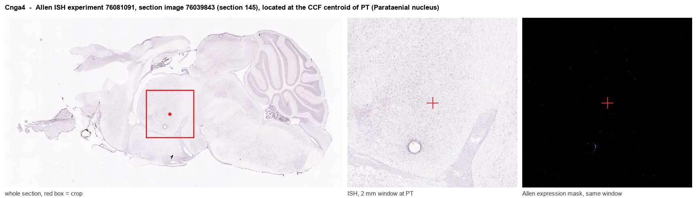
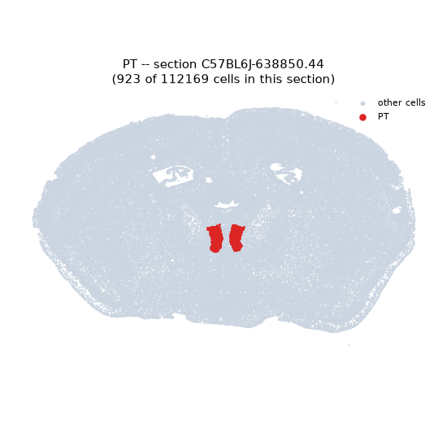
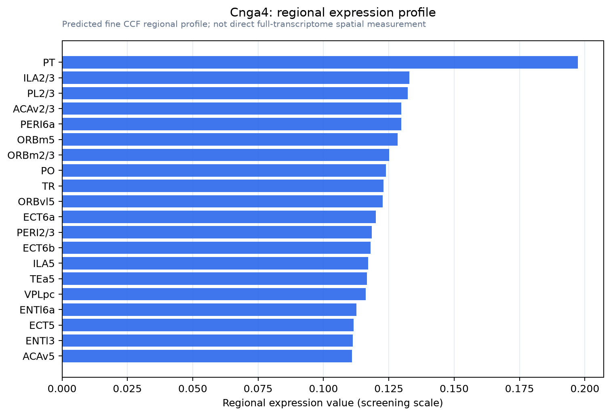

Cnga4
Cyclic nucleotide-gated channel alpha-4 (CNG channel alpha-4) (CNGa4) (Olfactory cyclic nucleotide-gated channel subunit 2) (OCNC2)
Spatial tier: REGION_BIASED · Class: ION_CHANNEL · Top region: PT (Parataenial nucleus) · Positive regions: 42/554
Function in PT: evidence, prediction, innovation
- Gene function
- CNGA4 is a modulatory subunit of the olfactory cyclic-nucleotide-gated channel, which in olfactory sensory neurons is a heterotetramer of CNGA2, CNGA4 and CNGB1b. CNGA4 does not form channels alone; it speeds calcium-calmodulin-dependent desensitisation, so it controls how quickly the cAMP-gated current adapts.
- Region function
- The parataenial nucleus is a dorsal midline thalamic nucleus that, like its neighbour the paraventricular thalamus, projects to nucleus accumbens, prefrontal and limbic cortex and is positioned to relay arousal and salience signals.
- Published in this region
- none No region-specific literature found. CNGA4 function is defined entirely in the olfactory epithelium, where Kelliher 2003 showed Cnga4-null mice have impaired odour adaptation and odour discrimination; Linley 2025 provides the anatomical description of parataenial afferents but reports nothing about CNG channels.
- Predicted function
- Prediction: a CNGA4-containing cyclic-nucleotide-gated conductance in parataenial neurons would make their excitability directly sensitive to cAMP produced by the many Gs-coupled neuromodulator receptors converging on midline thalamus, providing a fast, calcium-calmodulin-adapting depolarising current rather than the slow cAMP-to-HCN route. Knockdown should reduce neuromodulator-evoked depolarisation and blunt arousal- or salience-driven parataenial recruitment, predicting weaker cue-evoked accumbens drive. Ectopic-expression artefacts should be excluded first, as CNG subunits are commonly detected at low level outside olfactory tissue.
- Innovation
- ★★★★☆ 4/5 Olfactory CNG subunits in midline thalamus would be unexpected, and the parataenial nucleus itself is barely studied, but the expression needs validation.
- Tools
- Cnga4 knockout mice; CNG channel blockers L-cis-diltiazem and LY83583 (non-selective); anti-CNGA4 antibodies; midline thalamic targeting via stereotaxic AAV.
- References
Direct evidence located at the region

Allen ISH experiment 76081091, section image 76039843 (section 145): the section that contains the CCF centroid of Parataenial nucleus according to the Allen image-to-atlas alignment (reference_to_image), with a 2 mm window around that point. Left: whole section, red box = window. Middle: ISH signal. Right: Allen's expression-mask view of the same window. open this image in the Allen viewer
Direct spatial evidence

Regional expression figure

Predicted WMB × fine-CCF profile; not direct full-transcriptome spatial measurement.
Spatial profile
Evidence and specificity
- Evidence status
- PREDICTED_FINE
- Direct sources
- None; predicted localization only
- Exclusive threshold
- 12 positive regions out of 554
- Spatial specificity
- 0.268
- Top-region fraction
- 0.046
- Filter status
- PASS
Interpretation limits
- Cell-type-to-region projection is imputed expression, not direct spatial measurement.
- Adult reference atlases do not establish stability across age, sex, strain, state, or disease.
- Transcript abundance does not guarantee protein abundance or genetic-tool performance.